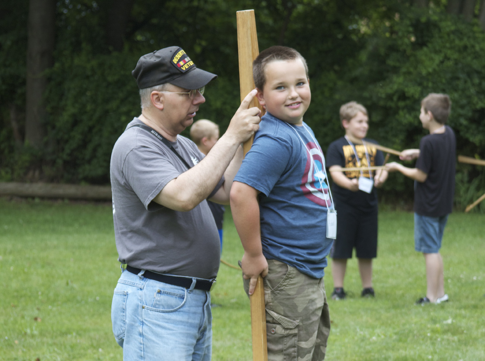
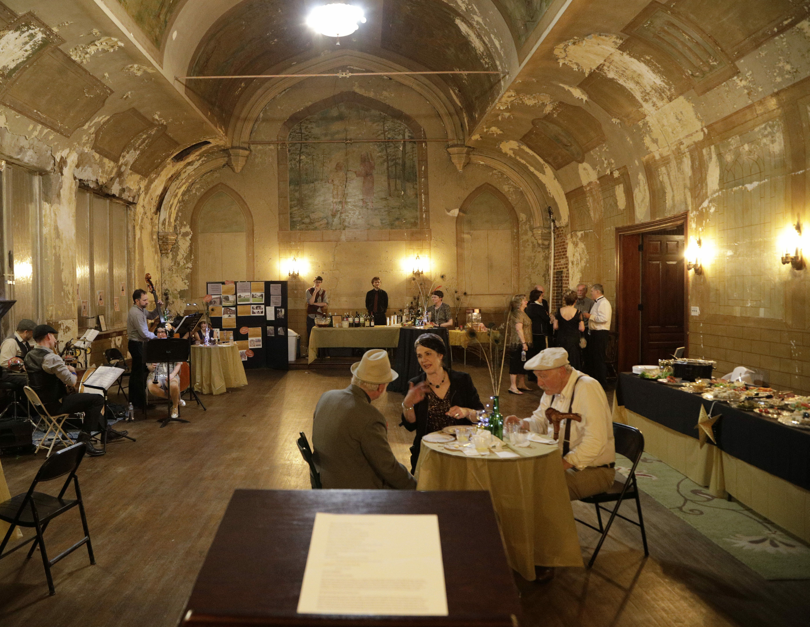

Room for the next “aha” moment
A flexible classroom and preservation learning spaces in the restored Odd Fellows Building would bring hands-on history and traditional craftsmanship to new audiences.
Preserving the Past. Investing in the Future.
Help turn Cumberland County’s history into discoveries that stay with us for a lifetime.
Your support can create new spaces to learn, protect the stories we share and welcome more people into the past.

Historical dress at a CCHS Block Party. Campaign booklet, p. 18.
Keep the county’s stories safe.
Make history something we experience.
Connect generations through a shared place.
The future begins with a connection
A hands-on lesson. A craft passed from one generation to the next. A family discovering the stories of its community. This campaign invests in the spaces that make those connections possible.
A bigger welcome. A lasting impact.
The proposed campaign pairs restoration and collections care with a new chapter of learning and discovery.
A flexible classroom and preservation learning spaces in the restored Odd Fellows Building would bring hands-on history and traditional craftsmanship to new audiences.

Restored historic spaces, expanded collections storage and improved digitization facilities would help safeguard the county’s history for future discovery.

A new visitor center, store and gallery space would offer a more welcoming arrival, while new educational spaces would deepen the experience for students and families.

From shared memories to shared possibility
Help preserve a place where stories can be cared for and shared—and where the next generation can discover why they matter.
Your part in the story
Help create a home for Cumberland County’s stories—and new ways for our community to discover them.
Preserving the Past. Investing in the Future.
Help create a welcoming home for the stories—and the people—who make Cumberland County.
A few things to know
The proposed project restores the Odd Fellows Building, expands collections storage, reimagines the visitor arrival experience, and adds spaces for education, research and digitization.
The campaign connects preservation with participation: a home for the county’s stories, a place to encounter them, and spaces where students and families can learn through hands-on experiences.
Yes. The supplied campaign plan includes pledges, cash or check, gifts of stock or appreciated securities, and corporate matching gifts. The campaign team will confirm the instructions and terms for each option.
The campaign plan includes donor recognition and naming opportunities. Speak with the campaign team to confirm current availability, gift terms and recognition preferences.
Campaign figures and construction milestones will be shared here once confirmed. This design preview does not present draft progress figures as current results.